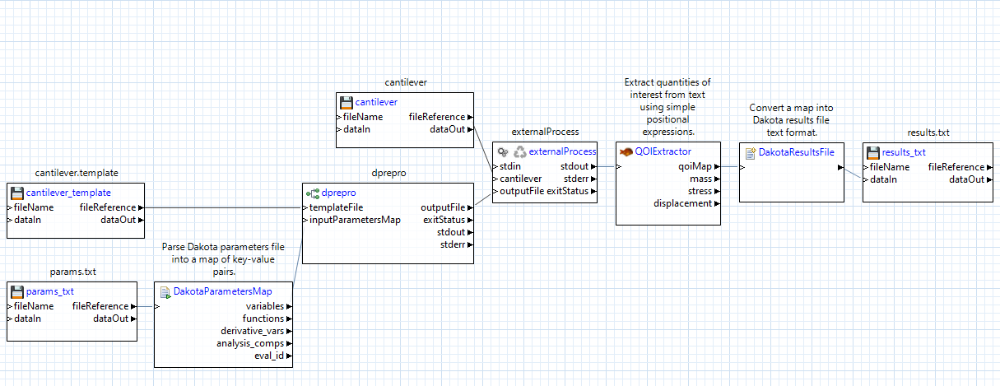
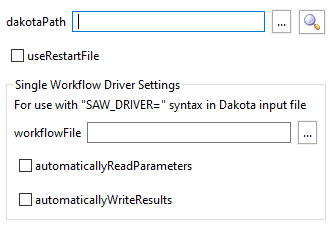

dakota
Description
Runs Dakota as a subprocess. This node supports a variety of modes in which Dakota can be run; in particular, this node is useful for running Dakota with a second “nested” workflow as the Dakota analysis driver.
Properties
dakotaPath: The system path to the Dakota executable. This field is automatically populated if you are building your workflow from a GUI and the Dakota executable path has been previously configured in the Preferences dialog.
analysisDriverWorkflow: The path to the nested workflow file that will act as Dakota’s analysis driver. This path should be relative to the location of the “outer” workflow file that this Dakota node is located on.
Note
This field cannot be used if there is more than one Dakota analysis driver. In addition, this field assumes the presence of the classic SAW_DRIVER string within the Dakota input file. Refer to the Notes on Dakota Interface Block - Classic Solution section below for more information.
useRestartFile: Instructs Dakota to write and read from a restart file. This node will automatically use the default restart file name, dakota.rst.
automaticallyReadParameters: If unchecked, the nested workflow is responsible for manually reading the Dakota parameters file. Refer to the Expert Mode Requirements section below for a detailed explanation of what this entails.
automaticallyWriteResults: If unchecked, the nested workflow is responsible for manually writing out the Dakota results file. Refer to the Expert Mode Requirements section for a detailed explanation of what this entails.
Input Ports
inputFile: The input file to Dakota.
preprocFile: If the Dakota input file itself contains dprepro markup, a “preproc” file provides the key-value pairs needed to pre-process the Dakota file at runtime. Providing a preproc file on this input port will activate Dakota’s
-preproccommand-line argument.Additional input ports: In addition, dprepro markup can be substituted ad hoc by new input ports. The names of these input ports must appear in the Dakota input file between dprepro curly braces
{}in order to be pre-processed. Note that the preprocFile input port takes precedence over any additional input ports if it is connected.
Output Ports
stdout: Dakota’s output stream.
stderr: Dakota’s error stream.
exitStatus: An integer indicating Dakota’s exit status (0 = no error).
Expert Mode Requirements
Dakota communicates with analysis drivers by writing a parameter file that must be read by that analysis driver, and by expecting a results file to be written out by the analysis driver upon completion. Ordinarily, Next-Gen Workflow handles the translation step between Dakota’s parameter file format and NGW parameter nodes; likewise, it handles the translation step between NGW response nodes and Dakota’s result file format.
“Expert mode” is enabled by unchecking the “automaticallyReadParameters” field, the “automaticallyWriteResults” field, or both. When running in expert mode, these translation steps are not handled. Instead, it is up to the analyst writing the analysis driver workflow to manually read from the Dakota parameters file, write the Dakota results file, or both.
If “automaticallyReadParameters” is unchecked, the analysis driver workflow must contain a “params”
parameternode, which is the file path to Dakota’s parameter file.If “automaticallyWriteResults” is unchecked, the analyst must use a
filenode to write the contents of a Dakota results file.It is ultimately up to the analyst to decide how to manipulate the parameter and results files, but the dakotaParametersMap and dakotaResultsFile nodes can help with performing map-based manipulations of these files.
Dakota Workflows in “Expert Mode”
By default, Next-Gen Workflow manages the cycle of parameters and responses between itself and Dakota. Behind the scenes, Dakota is writing its parameter information to a file, which Next-Gen Workflow knows how to read at the beginning of your analysis driver workflow. Likewise, behind the scenes, Next-Gen Workflow is writing the output response values to a file, which Dakota knows how to read.
If you wish to manually manage the raw transfer of information for these Dakota-formatted parameters and results files, you may do so, although the resulting analysis driver workflow will be more complex.
Let’s go through each of the changes:
Use a file node to read the parameter file from Dakota: This file node must look for the file specified in your Dakota input file by the parameters_file keyword. In this example, Dakota is writing to a file called “params.txt”.
Use a dakotaParametersMap node to read the contents of the parameters file. This node will give you direct access to all the data structures that Dakota provides. Most importantly, you will have access to the key-value pairs of parameter labels and values, represented in the workflow as the node’s “variables” output port, which produces a map object. You can provide this map to any of the pre-processing nodes through their inputParametersMap input port.
Use a dakotaResultsFile node to format your quantities of interest into Dakota result file format. In this example, we can make use of the qoiMap output port from our qoiExtractor node, which provides the results of our QOI expressions as a map of key-value pairs. The dakotaResultsFile node is then responsible for translating this map into the text format that Dakota can read.
Use a file node to write the results file for Dakota: This file node must write to the file whose name is specified by the results_file keyword in your Dakota input file. In this example, we pass the output from the dakotaResultsFile node to the dataIn port of the file node.
Note
One last, but important note: When it comes time to make the outer workflow that executes Dakota, you must make sure to alter the properties of the dakota node:
By default, “automaticallyReadParameters” and “automaticallyWriteResults” will be checked, indicating to Next-Gen Workflow that it should handle the Dakota parameters/results files for you. Unchecking both boxes will indicate that you wish to manually handle these files yourself.
Notes on Dakota Interface Block - dprepro Solution
In order for the nested workflow file to be detected by the calling workflow through Dakota, dprepro markup can be utilized, as follows:
interface analysis_drivers "{DRIVER}" fork parameters_file "params.txt" results_file "results.txt" file_save work_directory named "work_dir" directory_tag directory_savePlease note the following nuances about this interface block:
"{DRIVER}"implies that the calling Dakota node has an ad-hoc input port named DRIVER. This DRIVER input port must receive the output from a “dakotaWorkflowDriver” node, which performs the steps necessary to convert an IWF workflow file into a Dakota analysis driver script.The
forkkeyword is used to drive subprocess creation; however,systemmust be used instead offorkif you are running on Windows.“params.txt” and “results.txt” are arbitrary and may be replaced by your names of choice for the Dakota parameters and results files.
The work directory name
work_diris also arbitrary and may be replaced by your name of choice.Explicit tagging/saving of files and directories is necessary in order for Dakota to interoperate with the Next-Gen Workflow engine.
This dprepro-based approach allows you to connect multiple nested workflows to Dakota, simply by providing unique dprepro markup for each value of “analysis_drivers”, and adding an equal number of input ports for the desired number of workflow-based analysis drivers.
Notes on Dakota Interface Block - Classic Solution
In order for a nested workflow file to be detected by the calling workflow through Dakota, you must specify the Dakota study’s interface block in the following way:
interface analysis_drivers "SAW_DRIVER" fork parameters_file "params.txt" results_file "results.txt" file_save work_directory named "work_dir" directory_tag directory_savePlease note the following nuances about this interface block:
“SAW_DRIVER” is a “magic” replacement string that will be replaced by the Next-Gen Workflow engine at runtime. This replacement will form the final link between the Dakota study and the nested workflow file specified in the analysisDriverWorkflow property.
The
forkkeyword is used to drive subprocess creation; however,systemmust be used instead offorkif you are running on Windows.“params.txt” and “results.txt” are arbitrary and may be replaced by your names of choice for the Dakota parameters and results files.
The work directory name “work_dir” is also arbitrary and may be replaced by your name of choice.
Explicit tagging and saving of files and directories is necessary in order for Dakota to interoperate with the Next-Gen Workflow engine.
Finally, note that Dakota studies with multiple interface blocks or multiple analysis drivers are not supported using this approach. However, multiple interface blocks can be linked to Next-Gen Workflow using dprepro markup.